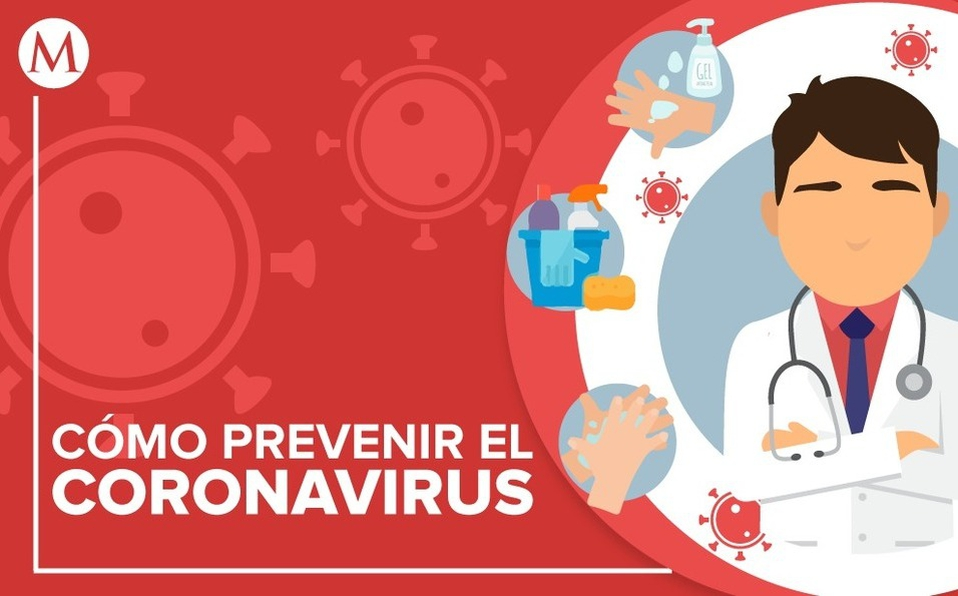

Experiencia en la Cuarentena del COVID-19

Desde que el virus covid-19 o también llamado coronavirus se ha declarado como una pandemia, el presidente Iván Duque declaro la suspensión de todas las escuelas y universidades, donde todos los estudiantes de modalidad presencial deben quedarse en su casa, como medida de prevención de ser contagiados por virus; sin embargo, las clases para los estudiantes se harán de manera virtual, con el motivo de no perder clases.
Todas las personas que han sido contagiadas por el covid-19, se encuentran en aislamiento en los hospitales, para evitar de que el virus no se pase a las demás personas que no han sido contagiadas. En cambio, las personas de todo el mundo que todavía no son portadoras del virus, se encuentran en cuarentena en sus casas, sin derecho a salir de ella, todo con el fin de evitar tener más contagiados.
En esta pagina les hablare de mi experiencia que he tenido, desde que empezó la cuarentena.
¿Qué medidas he tomado para no ser contagiado por el virus?
Las noticias han informado, sobre algunas recomendaciones para evitar que el virus entre en nosotros; también, para que las personas no se contagien. Las recomendaciones para la prevención del coronavirus son las siguientes:
- Lavarse las manos frecuentemente con agua y jabón, después haber estado en un lugar público.
- Evite tocarse los ojos, la nariz y la boca con las manos sin lavar.
- Evite el contacto cercano con personas que estén enfermas.
- Mantenga una distancia entre usted y las otras personas si el COVID-19 se está propagando en su comunidad.
- Quedarse en casa si está enfermo, excepto para conseguir atención médica.
- Cúbrase la boca y la nariz con un pañuelo desechable cuando tosa o estornude, o use la parte interna del codo.
- Bote los pañuelos desechables que haya usado a la basura.
- Si estás enfermo, usar una mascarilla cuando esté cerca de otras personas y antes de entrar al consultorio de un proveedor de atención médica.
- Si no está enfermo, no necesita usar una mascarilla a menos que esté cuidando a alguien que está enfermo.
¿Cómo me entretengo en la casa en este tiempo de cuarentena?
Muchas personas se sienten aburridas porque no saben que hacer en sus casas en este tiempo de cuarentena. Sin embargo, yo me entretengo para no estar con esas personas; por ejemplo: Puedo entretenerme jugando juegos de mesa con mi familia, lo que nos mantiene despejado la mente y estar muy concentrado.